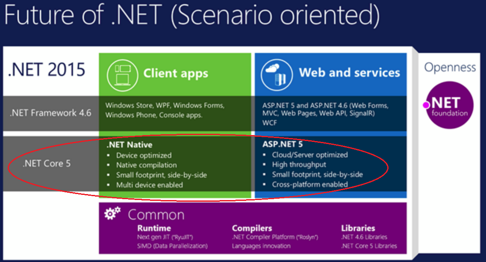

Yes, you are reading right – Now .NET is truly cross-platform, open-source technology and as many said, it's
no more grandpa's .NET
Let us start with CLR, CORE and other dependencies one by one. As of now, there are 3 flavors of CLR available – 1) .NET Framework CLR 2) Mono CLR 3) .NET CoreCLR (cloud optimized/pay as you go).
.NET Core consists of set of libraries called “
corefx” and small runtime called “
coreclr”.
Then "
What actually is .NET Core?"
It is nothing but
modular, cross platform and open source implementation of .NET Framework means our application can be targetted to run on windows, Linux, Mac OS X and docker.
Let us further break it down; what is what -
corefx –> repo contains .NET Core foundational lib’s alias CoreFx. Let say classes for collections, console or XML for that matter
coreclr –> repo contains the actual .NET Core runtime alias CoreCLR – base library called
mscorlib. It also contains GC, JIT compiler and some of the base .NET data types and low level classes like system.tostring, type etc
dnx –> .NET execution runtime, having the code to bootstrap and run our application. It includes compiling system, SDK tools and the native CLR Hosts
dnvm -> enables you to acquire one or multiple .NET Execution Environments (DNX). DNVM is simply a script, which doesn’t depend on .NET. You can install it via a PowerShell command from a command prompt window
dnu -> tool is responsible for all operations involved with packages in your application { dnu restore / dnu install / dnu publish / dnu pack / dnu build / dnu list }
.NET native –> compiles IL byte code to native machine code (no-JIT'ing), so that when the code is executed, there is only “native” code running. It produces binary directly to the OS to execute –no JIT-ing business or runtime compilation. .NET Native is the set of tools used to build .NET Universal Windows platform (UWP) apps.
a.k.a AOT, Ahead of Time compiler.
.NET Framework and .NET native is currently supported only on Windows OS. One thing to note here, .NET Native doesn't require .NET Framework runtime dependencies any more. In particular, if you set the .NET native to true then you do not require run time installed. However it uses the optimized implementation of .NET Core.

1) .NET Core runtime includes the same GC which is available in .NET Framework however it doesn't have things like App Domain, registry or CAS etc. Best thing above all is;
isolation– you are going to pack and ship only the run-time dependencies needed for the execution. Means no other external dependencies or shared components required on the targeted machine. We can deploy locally (side by side). It is also sub-set of .NET Framework. We no need to get the latest .NET for system wide installs. We pull the references which is required only for “our” project – that’s it. More importantly, as I said earlier this eliminates GAC installation or registry or COM dependencies or DLL from a installation path – it’s all gone now.
It’s pretty much work within the capsule which gets deployed through Nuget.
2) .NET Core story means Mono?
"No", Mono is an open source implementation of .NET Framework. It is alive and well with a large ecosystem on top. It independent of .NET Core.
3) .NET Core is mostly aimed for
server applications- say ASP.NET vNEXT.
ASP.NET 5/vNEXT (RC1) – fully open source expected in
Q1* 2016, optimized for modern cloud based applications. You can develop and run them across the platforms. It is great fix for Devops and Cloud Computing. With the level of modular separation, it is going to be the trend in development for Containers based micro services or distributed components maintained and updated separately.
4) ASP.NET 5 is based on a new
flexible run-time host. It provides a flexibility to run your application with any of the 3 different run-times - .NET framework, .NET Core and Mono. We can host our ASP.NET 5 on IIS, or any Open Web Interface .NET (OWIN)-based server or our own process or self host.
5)
No web.config/app.config settings, global.aspx for asp.net 5, more importantly there is no system.web as like traditional asp.net application. Your web config file is replaced with “Project.json” is our project metadata file which holds all the dependencies and framework to build and run etc.
> Start.cs is main file for our application – It has got a Startup constructor and Configuration-services which adds services to the container
> References – all dependencies of our projects are neatly packaged as nuget pkgs.
6) ASP.NET 5 uses
built-in Dependency Injection for configuring Services and Libraries. Admin can patch an application without requiring the application to recompile. More over application is also not locked into a patched version - newer versions which is patched can still be used. DI in ASP.NET 5 is end to end applied through .NET Stack.
7)
NuGet as a first class delivery vehicle- Yes, packaging is done using NuGet; – pack what we wanted and distributed as independent package.
8) In case of ASP.NET 5, there is
no compilation happens means build step is removed. We can make the changes and refresh the browser for new changes to reflect. The compilation happens automatically after save. It also fully supports side by side support, can be installed without affecting any other applications on the machine.
9) .NET Framework is a machine wide framework. Any changes affects all the application taking the dependency on it where as
.NET Core is XCOPY deployable stack. We do not have to get any out of the box run-time installed other than what application bundled with. It minimize the size of the application as well.
Step1) Execute the following command in command prompt under Admin
@powershell -NoProfile -ExecutionPolicy unrestricted -Command "&{$Branch='dev';iex ((new-object net.webclient).DownloadString('https://raw.githubusercontent.com/aspnet/Home/dev/dnvminstall.ps1'))}"
Step2) Dnvm upgrade or Dnvm update-self
Step3) dnvm install -r coreclr latest -u
Step4) dnvm list
Step5) Create the below code in C:\temp\Hello.cs
using System;
public class Program
{
public static void Main (string[] args)
{
Console.WriteLine("Hello, Windows");
Console.WriteLine("This is from Windows :) and running over .NET Core");
}
}
Step6) Create a project.json under the same folder where our CS file resides
{
"version": "1.0.0-*",
"dependencies": {
},
"frameworks" : {
"dnx451" : { },
"dnxcore50" : {
"dependencies": {
"System.Console": "4.0.0-beta-*"
}
}
}
}
Step7) dnu restore
Step8) dnx run
10) As of now, we can build few workloads like
1) Console Application 2) ASP.NET 5 and its services 3) Windows 10 UWP. But things are getting added. Read the future .NET Core road map
here
Disclaimer: This is my understanding about this topic read from various official content. Please feel free to correct me if you happen to see mistakes in this post.
<Update: 20/1/2016>
ASP.NET 5 is now renamed as ASP.NET Core 1.0
http://www.hanselman.com/blog/ASPNET5IsDeadIntroducingASPNETCore10AndNETCore10.aspx
</Update>{kind=link}
{kind=link}
{kind=link}
{kind=link}
{kind=link}